This work is licensed under a Creative
Commons Attribution 4.0 International License.
This work is licensed under a Creative
Commons Attribution 4.0 International License.
If you're not familiar with the Leisure Suit Larry franchise, I'd like to cite Jason Scott, who nailed it perfectly in a single sentence:
“It's a game that is in no way defensible in the modern era, it's a relic of it's time, making reference to the fact that it's a relic of a previous time”
This is the story of Leisure Suit Larry: Pocket Party. A game that Nokia invested literally millions in, to have it developed twice (you heard me right), only to ultimately cancel it. Whether this was a blessing or a curse, is for you to decide.
Due to legal concerns about active copyright protections and also due to personal promises, some identifiable information had to be withheld while writing this article, including, but not limited to, citing some of the sources referenced in my claims and altering the original image of the LSL development card.
This work is licensed under a Creative
Commons Attribution 4.0 International License.
It must have been sometime between 1997 and 1998 when a prepubescent boy aged 10 came into possession of a 5.25" floppy disk that was to change his life forever. Even then, this floppy disk was a relic from another time, but the fascination it exuded was undimmed.
Or shall we say: the fascination for the promise that emanated from it — a promise to a boy who was just about to get to know and explore this part of his world and interest.
The diskette contained nothing but Al Lowe's Leisure Suit Larry in the Land of the Lounge Lizards from 1987 and that boy was me.
This is where it all began.
This is where I came in contact with adventure games, where I
learned English twice as fast as I did in school, without the
internet or anyone I could have asked without blushing
first. Armed only with a dictionary and the desire to pass the
game's age verification quiz.
As a Nokia N-Gage fan from the very beginning, my reaction was obvious when Nokia announced on April 21, 2004Source: Gamespy, archived from the original on July 21, 2004. Retrieved February 7, 2012., that it will co-publish and develop Leisure Suit Larry: Pocket Party, based on Vivendi Universal Games' classic Leisure Suit Larry series.
I was once again intrigued.
Assume the role of Larry Lovage, nephew of the original Larry Laffer, and are immediately challenged by Larry’s lack of social skills, charm, style and luck. In Leisure Suit Larry: Pocket Party, players explore an extensive and highly detailed 3D college campus, while solving puzzles and engaging in risque activities. As they search for the ultimate good time, gamers bump into Rosie Palmer, the head cheerleader at Larry’s college. Attempting to win over Rosie’s heart, Larry is thoroughly embarrassed by her jock boyfriend Chuck Rockwell --humiliation never stopped Larry before and he is determined to do anything to be with Rosie.Source: Method Solutions, archived from the original. Retrieved July 9, 2006.
Apart from a few promotional screenshots and a description, the fact that it will be the first N-Gage game to use cel shading technology, which was still very rarely used at the time, nothing much was ever revealed about the game apart from the publisher and that TKO Software, who were already working on The Elder Scrolls Travels: Shadowkey at the time, would take over development. Nothing else tangible. The game remained in obscurity and was quietly cancelled at some point.

What certainly no one knew at the time, and no one could have
guessed either, was that the development cycle of the game was
almost complete. Not once, no, but twice, as both the TKO studio
in Santa Cruz, California and their offshoot in Dallas, Texas made
their own, distinct versions.
It is important to mention, however, that this did not happen at
the same time, but was ultimately accompanied by a move of the
mobile game department from Santa Cruz to Ireland with the N-Gage
division being relocated to Dallas. As beautiful and half-true as
the story of the two entirely different versions is, the
development just got transferred, a decision based on the mobile
games director leaving and starting his own company.
Let's stay in Santa Cruz for now, where the story of Leisure Suit Larry: Pocket Party, or as it was originally called — Leisure Suit Larry: Call of BootyEveryone in the office loved that name — everyone except Activision who were working on Call of Duty at the time so this idea got nixed and they decided, despite some serious objections, to play nice. — began.
To give you a rough idea of the studio's relatively small line-up, the mobile division in Santa Cruz literally consisted of 6 people: an artist, Eric Calande, two programmers, including Jerry Shaw who worked on 1988's Police Quest II: The Vengeance, Adam Danielski as producer, Jody Hicks as the game's creative director, and Ben Nichols, as the director and department lead.
In addition, there was another producer in charge from Nokia Vancouver who was substantially involved in the production of the game but had drastically different ideas and wanted lines to be pushed.
According to the stories, the producer basically once said:
We need to make a puzzle where you use sexual hand signals
,
and he holds up his hand in the shocker pose saying When
he goes to the frat party, to get in he will need to show the
bouncer the Shocker, Rocker, Spocker or the Knocker.
That was on the edge of the raunchy side that they were willing to do, but nothing further. There was no racism present and their job was to make sure to keep the spirit of the original game. Euphemisms, but not outright blatant sexual acts. This wasn't good enough for Nokia so they kept pressuring to get more sexual acts and whatnot. The team at TKO tried to get around this and constantly refused a lot of things.
The engine develoment was taking time and they got to first
playable not funny enough
and not raunchy
enough
. Feature creep started rolling in. They hired some
comedy writers, paid by Nokia, to come up with the dialogue.
Expectations on Nokia's side increased, while development was to
be sped up. According to Al Lowe, who once spoke to the programmer
about the project, said that to his knowledge Nokia's only goal
was to grind it out as cheaply and quickly as possible
, and
that wasn't so far-fetched: one artist, one designer, one
programmer — that was the typical team for mobile games back then
and mobile games were often developed in 3 months or less at that
time. That was the norm to measure up to, but impossible to meet
after all the feature requests from the game's publisher.
Then, when it was said that the game had to have a multiplayer mode, it became really time-consuming, unpleasant and expensive.
In the end there seems to be agreement on one thing: the reason why it was never released and here I would like to quote a former TKO Dallas employee:
“Nokia Vancouver totally screwed it up from our original vision and made it vulgar to the point where it was completely unreleasable.”
Jody Hicks, former creative director of TKO Santa Cruz, who even met with Al Lowe and really tried to capture the spirit of the originals, while updating it for a modern world, stumbles to this day when it comes to the game, saying:
“I'm not proud of the game, it's juvenile, sophomoric, and deeply tone-deaf with regards to racial stereotypes and overt sexualization of women. I won't ever share the design document I wrote as it does not reflect my personal views from the time when it was written or my personal standards and views of today. I was forced to write the game the way the publisher wanted it written, which was in a crass and "BroCentric" mentality, and while there are moments of the development cycle that brought me joy, the entire experience was demoralizing and embarrassing as a professional game designer.“
In a nutshell: as bad as the Santa Cruz version was, the Dallas version ended up being much worse, at least from a content perspective. The Santa Cruz version was shelved because it wasn't raunchy enough while the Dallas version was shelved for being too raunchy. Having seen it for myself, this is a gross understatement, to say the least.
Maybe the squirrels actively pursuing the continuation of their own species at the beginning of the game, or the mini-game in which you throw quarters into a lady's cleavage until she loses her top due to the sheer weight of the coins. Yes, really, and that's just the beginning.

I would like to emphasise at this point that I do not blame any of the developers or anyone else involved at TKO for this catastrophe in terms of content. On the contrary: In the end, the game was never released, as a result of meddling by the publisher. They had twisted ideas that made the game's release untenable which, sounds even more amazing when you consider that Nokia invested roughly 1.4 million, about how much Leisure Suit Larry 7: Love for Sail! costs, to make this game twice. They had wild ideas and disagreed with the people who had the experience required to implement these ideas in a proper way, that would suit the player audience, to the point where — ultimately — they had gone too far. The game was simply too 'x-rated' for release and once that point was reached, where it was no longer possible to make a U-turn, it was already too late.
Well, is there anything positive to say about this game at all? You bet there is! And I am very happy to say that this is mainly regarding the technical aspect!
As dull and tone-deaf as the game is in terms of content, it was technically sophisticated and flawlessly executed. Especially in regards to other titles for the Nokia N-Gage platform. This was shaping up to be a decent game.

By the standards of those times and the modest size of the
development studio, the game looks great. As advertised, it uses
cartoon-like 3D graphics — aka cel shading — and it runs
smoothly. The soundtrack is a bit monotonous, but fitting, and
there is even a background narrator who introduces the
story. However, I cannot say to what extent and whether this plays
a role in the latter course of the game. All in all, it seems to
be a fleshed out game that was almost ready to hit the
stores. Created by developers who did their jobs well and knew how
to use the tools they were given, but how the head of Nokia might
have said when he saw the game, This is by far the best looking
game I've seen for the N-Gage, and there's no way in hell we can
release it
.
 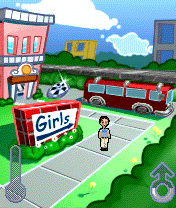
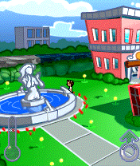
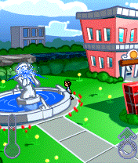
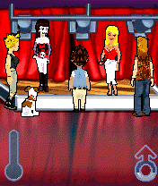
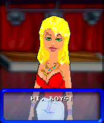
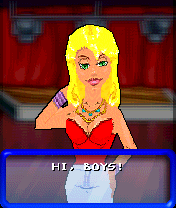
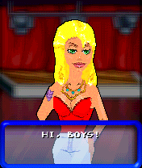
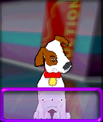
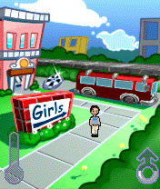
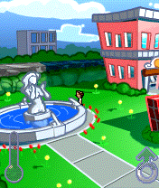
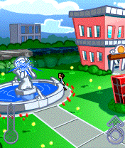
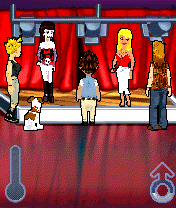
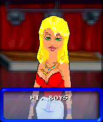
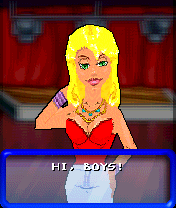
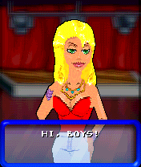
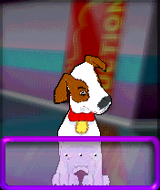
 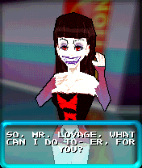
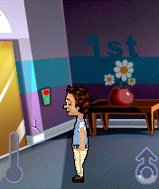
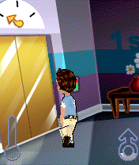
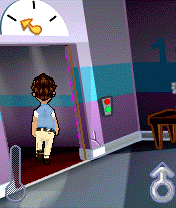
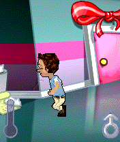
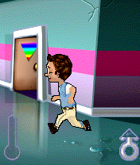
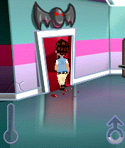
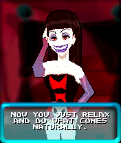
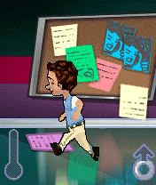
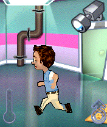
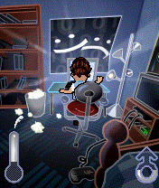
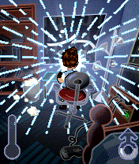
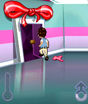
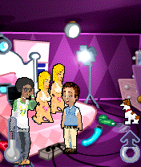
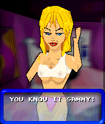
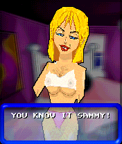
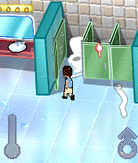
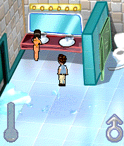
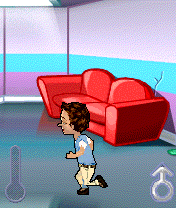
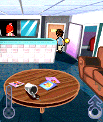
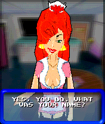
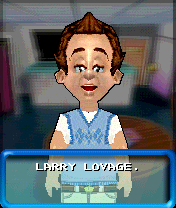
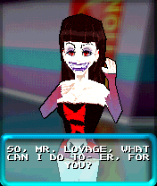
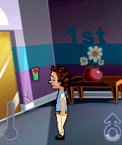
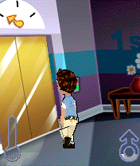
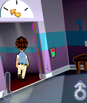
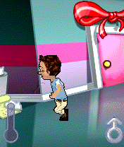
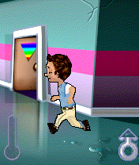
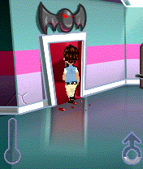
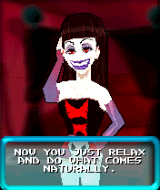
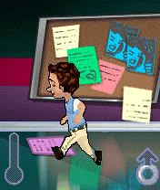
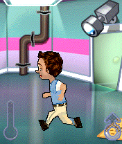
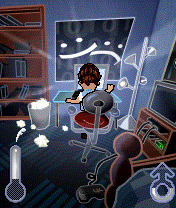
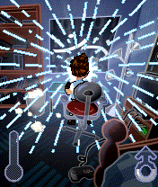
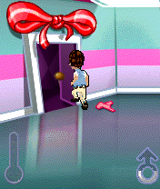
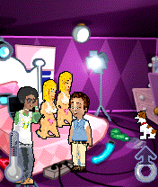
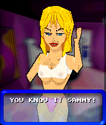
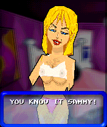
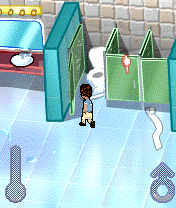
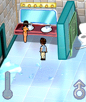
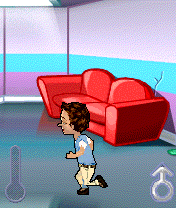
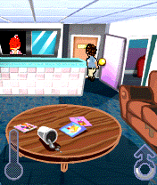
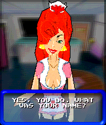
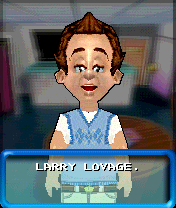

Looking back on all my research, I'm satisfied with just how much I was able to learn about the game and how open and interested all those who worked on this title were, even though it didn't end well.
The story of this game may be unusual, but at the same time it reflects the everyday life and reality of a studio that is committed to a fully externally financed project. It points out the problems that arise when publishers have a completely different idea of what a game should have in order to be successful: raunchyness instead of a soul, and in this particular case, indelicacy instead of a healthy sense of tact. Two simple things that might have made this story turn out differently.
I can say little about the whereabouts of the game here, but: from a preservationist's point of view, I am glad that at least the version made by TKO Dallas is safe. Including the source code, all assets such as source art, design and tech documentation, milestones and even whiteboard design pictures.
And while I share Jody Hick's views and agree with them completely, I still hope that one day it will be available to a wider audience. At the end of the day, many people worked on it for months, only for no one to play it.
I hope you enjoyed this article. If not, let me know – I welcome constructive feedback to improve the quality of my content. If you are interested in the Nokia N-Gage in general, you are cordially invited to visit our small online community. You can find us on Discord and on Telegram.
At this point I would like to thank my friend Razvan. Without him, this article would have not been possible.
I would also like to thank Dan Whelan, who did an excellent job with the preparation and restoration of the graphics used in this article, and who enriches our community so much. Not only with his artistic skills, but also because of his passion for the Nokia N-Gage and what it represents even 18 years after its initial release.
I would like to thank Timo Weirich, owner and curator of the virtual online museum retro-net.de for his continous support and insights.
“Happily, I had nothing to do with that game.” — Al Lowe, after reading this article